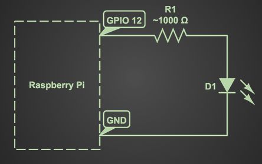
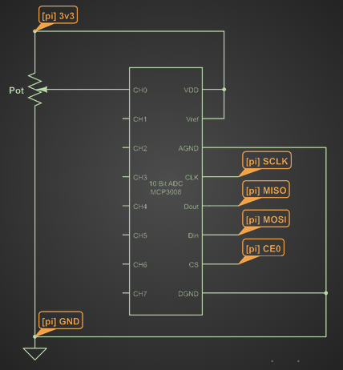
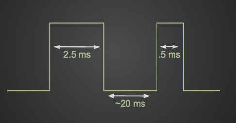
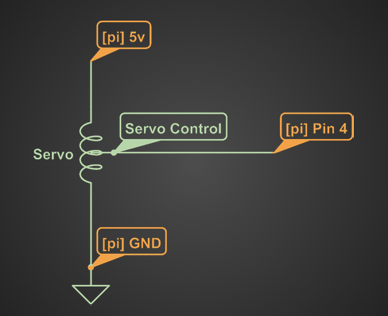

I gave a talk at SciPy 2013 titled open('dev/real_world') Raspberry Pi
Sensor and Actuator Control. You can find the video on
youtube, the slides on google
drive
and I will summarize the content here.
Typically as a programmer you will work with data on disk, and if you are lucky you will draw pictures on the screen. This is in contrast to physical computing which allows you as a programmer to work with data sensed in from the real world and to control devices that move in the real world.
physical computing at work. (source)
Goal
Use a Raspberry Pi to read in accelerometer value and to control a servo motor.
Definitions
- Raspberry Pi
- Small $35 Linux computer with 2 USB ports, HDMI out, Ethernet, and most importantly...
- GPIO Pins
- General Purpose Input/Output Pins
- This is the component that truly enables "physical computing". You as a programmer can set the voltage high or low on each pin, which is how you will talk to actuators. You can also read what the voltage is currently on each pin. This is how sensors will talk back to you. It is important to note that each pin represents a binary state, you can only output a 0 or a 1, nothing in between.
In this article I will go over four basic Python projects to demonstrate the hardware capabilities of the Raspberry Pi. Those projects are:
- Blink an LED.
- Read a pot.
- Stream data.
- Control a servo.
Blink an LED.
An LED is a Light Emitting Diode. A diode is a circuit element that allows current to flow in one direction but not the other. Light emitting means ... it emits light. Your typical LED needs current in the range of 10-30 mA and will drop about 2-3 volts. If you connect an LED directly to your Pi's GPIO it will source much more than 30 mA and will probably fry your LED (and possibly your Pi). To prevent this we have to put a resistor. If you want to do math you can calculate the appropriate resistance using the following equation:
R = (Vs - Vd) / I
But if you don't want to do math then pick a resistor between 500-1500 ohms. Once you've gathered up all your circuit elements (LED and resistor), build this circuit on a bread board:

thats not so bad, is it?
The code is also pretty simple. But first you will need to install RPi.GPIO. (It might come preinstalled on your OS.)
import time
from itertools import cycle
import RPi.GPIO as io
io.setmode(io.BCM)
io.setup(12, io.OUT)
o = cycle([1, 0])
while True:
io.output(12, o.next())
time.sleep(0.5)
The important lines basically are:
io.setup(12, io.OUT)
io.output(12, 1)
These lines of code setup pin 12 as an output, and then output a 1 (3.3 volts). Run the above code connected to the circuit and you should see your LED blinking on and off every half second.
{kind=link}
Read a pot.
A pot is short for potentiometer, which is a variable resistor. This is just
a fancy word for knob. Basically by turning the knob you affect the resistance,
which affects the voltage across the pot. (V = IR, remember?). Changing
voltage relative to some physical value is how many sensors work, and this
class of sensor is known as an analog sensor. Remember when I said the GPIO
pins can only represent a binary state? We will have to call in the aide of
some more silicon to convert that analog voltage value into a binary stream of
bits our Pi can handle.
That chunk of silicon is refered to as an Analog-to-Digital Converter (ADC). The one I like is called MCP3008, it has 8 10-bit channels, meaning we can read 8 sensors values with a resolution of 1024 each (2^10). This will map our input voltage of 0 - 3.3 volts to an integer between 0 and 1023.

I've turned the Pi into ephemeral yellow labels to simplify the diagram
To talk to the chip we will need a python package called spidev. For more information about the package and how it works with the MCP3008 check out this great blog post
With spidev installed and the circuit built run the following program to read live sensor values and print them to stdout.
import spidev
import time
spi = spidev.SpiDev()
spi.open(0,0)
def readadc(adcnum):
if not 0 <= adcnum <= 7:
return -1
r = spi.xfer2([1, (8+adcnum)<<4, 0])
adcout = ((r[1] & 3) << 8) + r[2]
return adcout
while True:
val = readadc(0)
print val
time.sleep(0.5)
The most important parts are these two lines:
r = spi.xfer2([1, (8+adcnum)<<4, 0])
adcout = ((r[1] & 3) << 8) + r[2]
They send the read command and extract the relevant returned bits. See the blog post I linked above for more information on what is going on here.
Stream data.
To stream data over the wire we will be using the ØMQ networking library and implementing the REQUEST/REPLY pattern. ØMQ makes it super simple to set up a client and server in Python. The following is a complete working example.
Server
import zmq
context = zmq.Context()
socket = context.socket(
zmq.REP)
socket.bind('tcp://*:1980')
while True:
message = socket.recv()
print message
socket.send("I'm here")
Client
import zmq
context = zmq.Context()
socket = context.socket(
zmq.REQ)
a = 'tcp://192.168.1.6:1980'
socket.connect(a)
for request in range(10):
socket.send('You home?')
message = socket.recv()
print message
Now we can use traits and enaml to make a pretty UI on the client side. Check out the acc_plot demo in the github repo to see an example of the Pi streaming data over the wire to be plotted by a client.
Control a servo
Servos are (often small) motors which you can drive to certain positions. For example, for a given servo you may be able to set the drive shaft from 0 to 18o degrees, or anywhere in between. As you can imagine, this could be useful for a lot of tasks, not least of which is robotics.
Shaft rotation is controlled by Pulse Width Modulation (PWM) in which you encode information in the duration of a high voltage pulse on the GPIO pins. Most hobby servos follow a standard pulse width meaning. A 0.5 ms pulse means go to your min position and a 2.5 ms pulse means go to your max position. Now repeat this pulse every 20 ms and you're controlling a servo.

The pulse width is much more critical than the frequency
These kind of timings are not possible with Python. In fact, they aren't really
possible with a modern operating system. An interrupt could come in at any time
in your control code, causing a longer than desired pulse and a jitter in your
servo. To meet the timing requirements we have to enter the fun world of
kernel modules. ServoBlaster is a
kernel module that makes use of the DMA control blocks to bypass the CPU
entirely. When loaded, the kernel module opens a device file at
/dev/servoblaster that you can write position commands to.
I've written a small object oriented layer around this that makes servo control simpler. You can find my library here:
https://github.com/jminardi/RobotBrain
Simple connect the servo to 5v and ground on your Pi and then connect the control wire to pin 4.

The python code is quite simple:
import time
import numpy as np
from robot_brain.servo import Servo
servo = Servo(0, min=60, max=200)
for val in np.arange(0, 1, 0.05):
servo.set(val)
time.sleep(0.1)
All you have to do is instantiate a servo and call its set() method with a
floating point value between 0 and 1. Check out the servo_slider
demo on
github to see servo control implemented over the network.